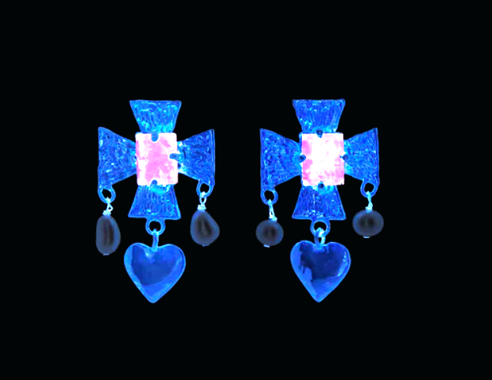
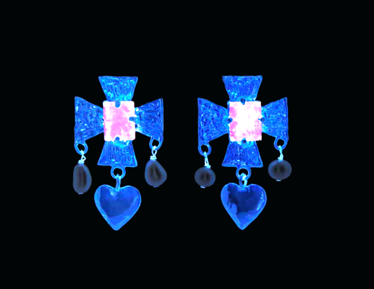

Middle Ages Modern is a New Aesthetic for Our Increasingly Medieval Times
While I’ve never particularly wanted a canopy bed, lately I can’t help but wonder if I might sleep more soundly, wake more peacefully, and make love more ravishingly beneath sloping damasks and tousled in sumptuous silks. Blame the change of seasons if you must, but I chalk it up to more than just a brisk breeze. Whereas cottagecore—an undeniable reigning trend of the pandemic era—might have pointed to our collective longing for cozy and pastoral vibes, the emergence of this new aesthetic points to a tougher, more dramatic, and even mystical turn.
The medieval era, often referred to as the Middle Ages or the Dark Ages, is bracketed between the fall of Rome in the fourth century through the beginning of the Renaissance in the early 16th century, a dizzying sprawl of time. To make matters even more expansive, it’s a particularly permeable period and genre within our collective imagination thanks to fantasy films and mythical tales. Where real medieval history ends and medieval myth begins can be hard for the average pleb to pin down. This intermingling impacts the way we experience and process a so-called medieval aesthetic. It might just be one of the few visual languages that someone without a background in art history can point out. (Suspending strict academic definitions, it’s a bit of a “you know it when you see it” kind of thing.)
Larisa Grollemond, a curator in the Manuscripts Department at the Getty Museum who recently contributed to an exhibit called “The Fantasy of the Middle Ages,” notes that Medievalisms—the remixing of aspects of medieval art, architecture, and literature—are “a staple of our collective cultural knowledge.” Thanks to representations of the period in film, television, video games, and a huge variety of other media, this world is “easy to reach for” when we’re hungry for a new aesthetic. Within the collectible design space, a growing class of contemporary designers appears to be gravitating toward this world too, creating work that points to a longing for rawness and permanence, protection, and perhaps a bit of escapism.
Metalwork, ornate detailing that evokes calligraphy and scrollwork, jewel tones, and darker woods—not to mention technologies borne of antiquity like forging, blacksmithing, and tin plating—are some prominent themes. Elsewhere, across fashion (look to the knit armored offerings from Isa Boulder, boned corsets from KNWLS, and Paloma Wool’s ode to Joan of Arc) and jewelry (indie creators like Floating World, Grace Fforde, and CLARK), the mood is absolutely exuding Ren Faire realness.
[…] Frank Traynor, the artist behind The Perfect Nothing Catalog, has developed a unique style of gem-encrusted tin-over-copper lattice work that transforms quotidian objects—lightswitch plates, bath faucets, and even trash cans and pepper mills—into relics of uncommon charm. Using collected shells, stones, and other glittering bits, the result is a buried treasure-meets-Met Cloisters-meets Grimms’ Fairy Tales mashup.
“Personally, I’ve been feeling very drawn to Old World aesthetics,” she explains in an email. “Rich colors, texture, layers, lots of ornamentation and decoration…astronomy and botany.”
[…]
The furniture dealer Bianca Stillwell of Monte Visión has been a bellwether of this vibe shift. “I’ve never been into Scandinavian, really, so I’m particularly excited to see this darker stuff creeping in,” she says. “These days I am more into esoteric-leaning, darker, moodier colors and furniture. I really care about seeing a human touch to stuff. I love stone, I love steel, I love wood, I love Old World craft.” Whereas Scandinavian aesthetics are decidedly muted and light-of-touch, and postmodernism feels optimistic if a bit unhinged, medieval aesthetics are enveloping, immersive, and transporting. As we have reentered the world following a season of forced isolation, many of us have found our circumstances to be less than hospitable.
“I associate medieval times with the tension between poverty and extreme wealth exacerbated by plagues, which created an overarching sense of darkness and helplessness,” Sophie notes. “But when you look at the aesthetics and artifacts of that time they are often full of whimsy and fantasy.”
[…]
For Chase Biado and Antonia Pinter of A History of Frogs, the element of fantasy is inextricable from their artistic vision. “We are deeply invested in the role fantasy plays in our daily lives, [and] we like to play with the past.”
Their creations—most recently, an assemblage of bronze, brass, copper, and patinated aluminum sculptures and objects that are at turns lace-y, drip-castle-y, a bit primitive yet otherworldly—defy direct allegiance to a particular historical context. A History of Frogs has used evocative terms like Goblin Baroque and Marsupial Gothic that gesture toward, but ultimately reach beyond, a known history. They describe their work as “anti-modernism” because it’s ornate and decorative, but also imperfect and idiosyncratic.
But the draw to fantasy is more than a stylistic interest. “Our love of fantasy comes in part from a dissatisfaction with the world and a desire for more—more magic, more emotion, more imagination,” Chase and Antonia explain. “[We] try to bring that into the world through the objects we make.” Their use of metals also echoes a sentiment expressed by the other makers engaging with medieval aesthetics. “We have a desire to build something that is going to last a while, when so much seems disposable,” they add.
If one thing is clear, it’s that medieval is as much a container of human imagination as it is a period of history. It embraces a plurality of longings, tastes, impulses, and inspirations: a “dirty-footed ideal” for Traynor, “extravagance and beauty” for Carson, a slow and intentional creative physicality untouched by industry for Lane. The Middle Ages Modern aesthetic is both darkness and magical thinking; of the past yet also of our own imagining. Perhaps, after a shared transit through hardship, we’re all planting the seeds of a more hopeful renaissance to come.
 
